Symbol Plot¶
This section provides to add and display user defined symbols at user picked location on the CAE model.
VCollab currently provides following symbols display types in 2D as well as in 3D,
Symbol Plot Types
Vector |
Appears if CAE model contains at least one vector result. |
Tensor |
Appears if CAE model contains at least one tensor result. |
SPC |
Single Point Constraint appears if CAE model contains any SPC data. |
Pressure |
Appears if CAE model contains “Pressure Loads” result |
Vector Type Symbols
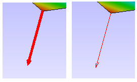
Tensor Type Symbols
Tensile
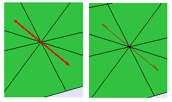
Compression
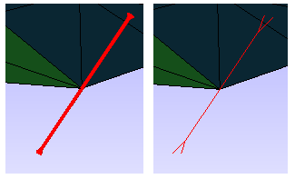
SPC (Single Point Constraint) Symbols
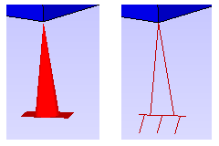
Pressure Symbols
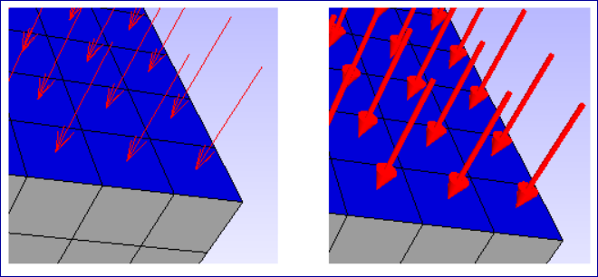
Symbol Plot Manager Panel
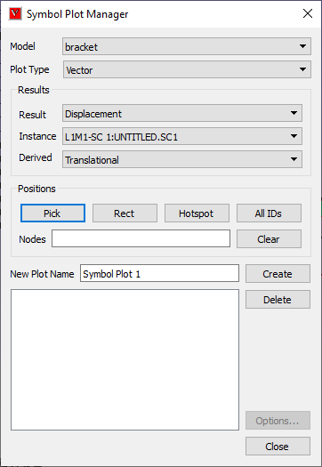
Model |
Allows user to select CAE model. |
Plot Type |
Lists possible plot types for the model selected. |
Result |
Lists possible results for the plot type selected. |
Instance |
Lists all instance names for the result selected. |
Derived |
Lists all possible derived vector names for the result selected. |
Pick |
Allows user to pick a vertex (node based) on model. |
Rect |
Allows user to select multiple nodes/vertices by rectangular selection. |
Hotspot |
Allows user to use hotspot nodes here. |
All IDs |
Selects all valid CAE Node IDs from the visible parts for selected result. |
Nodes |
Lists all the nodes selected for current symbol plot. |
Clears |
Clears the nodes entered in the textbox. |
New Plot Name |
Name of the plot to be created. |
Create |
Creates the symbol plot associated with [Plot Name] and appends the name to plot list box below. |
Delete |
Deletes node set by its name. |
Options… |
Pops up Options dialog for selected symbol plot. |
Symbol Plot Options
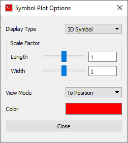
Display Type |
Lists all available symbols. |
Scale Factor |
Allows user to control the size of the symbol |
Length |
Allows user to control the length or height of the symbol. |
Width |
Allows user to control the width of the symbol. |
View Mode |
Provides options to display the symbols. Auto, From Position, To Position and Resultant. This functions are applicable only for Vector type symbols. |
Color |
Allows user to change the color of all symbols. |
Close |
Closes the dialog. |
How to draw vector symbols?
Click Symbol Plot icon in CAE toolbar.
It pops up symbol plot dialog.
Select a model from the list.
Select a of Plot Type
Select a plot type from the combo box, which lists valid plot types based on CAE results
Define Symbol Direction
CAE result data is required for symbol direction
Select a CAE Result,
Select an Instance,
Select a derived vector if available
Select complex components for complex eigen results.
Define Symbol Positions
User can skip this step, if plot type is ‘SPC’ or ‘Pressure’, and go to next step to create a plot. In other cases, user can use different options to select Node IDs.
Picking on model
Enable Pick option and click on the model to pick a node ID.
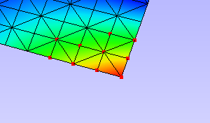
Rectangular / Window selection on model
Enable ‘Rect’ mode and select the node IDs in window.
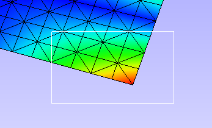
Using existing Probe / Hotspot label nodes.
Click ‘Hotspot’ button to append existing node IDs in the Nodes text box.
Using All IDs command.
Click ‘All IDs’ button.
This command selects valid Node IDs based on the result definition.
Provide Symbol Plot Name
Default name is provided by application based on number of plots exists.
Change the plot name if necessary.
Symbol Plot Creation
Click ‘Create’ button to create symbol plot.
Created symbol plot name is appended to the list box below ‘Create’ button.
Symbol Plot List and Visibility
All created symbol plots are listed in the box with a check box to enable/disable plot visibility,
User can hide some symbol plots to avoid messy visualization.
Uncheck the plot names in the list box to hide it.
Deleting Symbol Plots
Select a plot in the list.
Click ‘Delete’ button. The plot selected will be deleted from viewer as well as from list box.
Symbol Plot Options
Using this option user can,
toggle between Symbol display type between 2D and 3D.
scale the symbol length and width.
enter a specific scale factor in the given text boxes.
change view mode for vector symbols.
change the color of symbols
Note: All the options are applicable only for the current symbol plot selected.
How to use plot options?
Define plot type, results and positions.
Click ‘Create’, which applies and displays symbols.
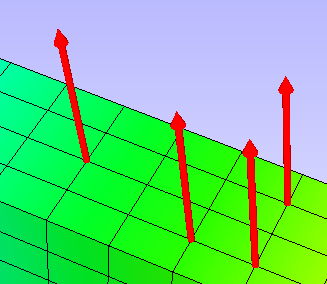
Click ‘Options’ button, which pops up symbol plot options dialog.
This UI allows user to control length/height, width and color of symbols.
The following image displays the symbols after modifying the symbol size and color.
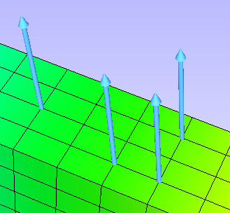
User can change the symbols into 2D.
Select symbol type as 2D Arrow.
User can select different view modes, only for Vector Type symbols in options dialog.
View mode : Auto, which makes all symbols visible on the outer surface of the model.
View mode : From Position makes all symbols starts from vertices.
View mode : To Position is default one, makes all vector symbols ends at vertices.
View mode : Resultant computes a single symbol by averaging all symbols and displays the resultant.
User can create multiple plots and classify them with color and size.
{kind=link}
{kind=link}
{kind=link}
{kind=link}
{kind=link}